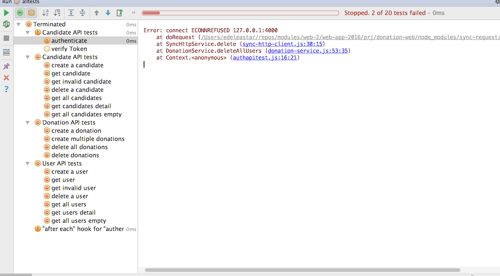

-
Objectives
Incorporate JWT security strategy into the application, securing the api routes. Rework the test infrastructure to fully exercises the secure API.
-
Delete Donations for a Candidate
This is a new endpoint in Donation-Web to support deletion of candidates:
routesapi.js
{ method: 'DELETE', path: '/api/candidates/{id}/donations', config: DonationsApi.deleteDonations },app/api/donationsapi.js
exports.deleteDonations = { auth: false, handler: function (request, reply) { Donation.remove({ candidate: request.params.id }).then(result => { reply().code(204); }).catch(err => { reply(Boom.badImplementation('error removing Donations')); }); }, };And then a test, also in donation-web:
test/donationsapitest.js
test('delete donations', function () { const returnedCandidate = donationService.createCandidate(newCandidate); for (var i = 0; i < donations.length; i++) { donationService.makeDonation(returnedCandidate._id, donations[i]); } donationService.deleteDonations(returnedCandidate._id); const d = donationService.getDonations(returnedCandidate._id); assert.equal(d.length, 0); }); }); -
JWT Libraries
Currently our API is completely open - as we have disabled any authentication strategy on each of these routes:
... auth: false, ...This is deliberate, as the authentication strategy we have install in the app is unsuitable:
server.auth.strategy('session', 'cookie', true, { password: 'password-should-be-32-characters', cookie: 'donation', redirectTo: '/login', isSecure: false, });This strategy utilities the browser cookie facility - is not appropriate for an API (where there may be no browser). We need an alternative strategy to secure the API.
One of the most common approaches is called
JSON Web Tokens:and we will employ a simple version of it now. These are two libraries we will use:
Install both a part of our application:
npm install hapi-auth-jwt2 -save npm install jsonwebtoken -savepackage.json
{ "name": "donation-web", "version": "1.0.0", "description": "an application to host donations for candidates", "main": "index.js", "scripts": { "start": "node index", "test": "echo \"Error: no test specified\" && exit 1" }, "author": "", "license": "ISC", "dependencies": { "boom": "^3.2.2", "handlebars": "^4.0.5", "hapi": "^14.1.0", "hapi-auth-cookie": "^6.1.1", "hapi-auth-jwt2": "^7.0.1", "inert": "^4.0.1", "joi": "^9.0.4", "jsonwebtoken": "^7.1.9", "lodash": "^4.15.0", "mongoose": "^4.5.8", "mongoose-seeder": "^1.2.1", "vision": "^4.1.0" }, "devDependencies": { "chai": "^3.5.0", "mocha": "^3.0.2", "sync-request": "^3.0.1" } } -
Authentication Route
Our objective is to protect key routes so that they are only accessible to authenticated users. These users must bear a valid token, which serves to validate the user and enable their identity to be confirmed.
Before we create the routes + handlers to support this, we need some utility functions to generate and manipulate the tokens
app/api/utils.js
const jwt = require('jsonwebtoken'); exports.createToken = function (user) { return jwt.sign({ id: user._id, email: user.email }, 'secretpasswordnotrevealedtoanyone', { algorithm: 'HS256', expiresIn: '1h', }); }; exports.decodeToken = function (token) { var userInfo = {}; try { var decoded = jwt.verify(token, 'secretpasswordnotrevealedtoanyone'); userInfo.userId = decoded.id; userInfo.email = decoded.email; } catch (e) { } return userInfo; };These use one of the libraries we have installed. The first method generates a token, and the second decodes an existing token, recovering the encrypted fields. In our case, we are basing the token on the User ID + email.
We now need a way to authenticate the users, using email+password which, if correct, will lead us to generate a token.
Here is a new route for this purpose:
routesapi.js
{ method: 'POST', path: '/api/users/authenticate', config: UsersApi.authenticate },The implementation:
... const utils = require('./utils.js'); ... exports.authenticate = { auth: false, handler: function (request, reply) { const user = request.payload; User.findOne({ email: user.email }).then(foundUser => { if (foundUser && foundUser.password === user.password) { const token = utils.createToken(foundUser); reply({ success: true, token: token }).code(201); } else { reply({ success: false, message: 'Authentication failed. User not found.' }).code(201); } }).catch(err => { reply(Boom.notFound('internal db failure')); }); }, };We will test this route in the next step.
-
Testing Authenticate
This is a skeleton to test the authentication routes:
test/authapitest.js
'use strict'; const assert = require('chai').assert; const DonationService = require('./donation-service'); const fixtures = require('./fixtures.json'); const utils = require('../app/api/utils.js'); suite('Candidate API tests', function () { let users = fixtures.users; let newUser = fixtures.newUser; const donationService = new DonationService(fixtures.donationService); beforeEach(function () { donationService.deleteAllUsers(); }); afterEach(function () { donationService.deleteAllUsers(); }); test('authenticate', function () { }); });Note that we are including the
utilsfunctions from the main application. These will help us validate the token (for test purposes), but they are not exposed as part of the api.In the test folder, we can extend the
DonationServiceto support authenticate:authenticate(user) { return this.httpService.post('/api/users/authenticate', user); }Here is a first simple test to verify that the route is wired up correctly:
test('authenticate', function () { const returnedUser = donationService.createUser(newUser); const response = donationService.authenticate(newUser); assert(response.success); assert.isDefined(response.token); });This should run successfully.
We could go one step further and verify that the token is correctly encoded:
test('verify Token', function () { const returnedUser = donationService.createUser(newUser); const response = donationService.authenticate(newUser); const userInfo = utils.decodeToken(response.token); assert.equal(userInfo.email, returnedUser.email); assert.equal(userInfo.userId, returnedUser._id); });Here we see if the userId and email can be successfully recovered from the token. We will not need to do this on the client, but this test helps firm up our understanding of how the tokens work.
-
Securing API Routes
Now that we have established the basic mechanism, we can incorporate jwt auth into the app itself.
app/api/utils.js
We first need a validation function:
... const User = require('../models/user'); ... exports.validate = function (decoded, request, callback) { User.findOne({ _id: decoded.id }).then(user => { if (user != null) { callback(null, true); } else { callback(null, false); } }).catch(err => { callback(null, false); }); };This function is required by the jwt validation strategy we are going to introduce. It will be passed the decoded token and will attempt to validate it. For our purposes, it is valid if it contains and ID for user in our database.
index.js
Now we can register the plugin:
... server.register([require('inert'), require('vision'), require('hapi-auth-cookie'), require('hapi-auth-jwt2')], err => { ...Then we define a new strategy, which will be in addition to the strategy already in place:
... const utils = require('./app/api/utils.js'); ... server.auth.strategy('jwt', 'jwt', { key: 'secretpasswordnotrevealedtoanyone', validateFunc: utils.validate, verifyOptions: { algorithms: ['HS256'] }, });validateFuncis specified here as part of the strategy.app/api/*api,js
We now mark all of our api routes with this jwt strategy, replacing:
auth: false,with
auth: { strategy: 'jwt', },The ONE exception is the authenticate strategy, which must remain unguarded:
exports.authenticate = { auth: false, ...(Otherwise users could not attempt to authenticate!).
Try running all tests now:

As we have guarded all the routes, all tests fail as our tests do not attempt any authentication (yet).
If you try to access the api from a browser we see similar problems:

-
Jwt Test Support Classes
All of our api routes are not reporting a missing authentication error:
This is because we are not providing the jwt token upon access. As we have already encapsulate http access in our tests, we can introduce jwt auth into the tests reasonably cleanly.
test/sync-http-client.js
This is a reimplementation of our lowest level htpp encapsulation class:
var request = require('sync-request'); class SyncHttpService { constructor(baseUrl) { this.baseUrl = baseUrl; this.authHeadder = null; } setAuth(url, user) { const res = request('POST', this.baseUrl + url, { json: user }); if (res.statusCode == 201) { var payload = JSON.parse(res.getBody('utf8')); if (payload.success) { this.authHeadder = { Authorization: 'bearer ' + payload.token, }; return true; } } this.authHeadder = null; return false; } clearAuth() { this.authHeadder = null; } get(url) { var returnedObj = null; var res = request('GET', this.baseUrl + url, { headers: this.authHeadder }); if (res.statusCode < 300) { returnedObj = JSON.parse(res.getBody('utf8')); } return returnedObj; } post(url, obj) { var returnedObj = null; var res = request('POST', this.baseUrl + url, { json: obj, headers: this.authHeadder }); if (res.statusCode < 300) { returnedObj = JSON.parse(res.getBody('utf8')); } return returnedObj; } delete(url) { var res = request('DELETE', this.baseUrl + url, { headers: this.authHeadder }); return res.statusCode; } } module.exports = SyncHttpService;It included new methods
setAuthandclearAuth, which manage the jwt tokens:setAuthrequests a token from the server, and stores in in anauthHeaderproperty.clearAuthclears out this property.
get,postanddeletethen include this header as part of all requests.test/donation-service.js
In the
DonationServiceclass, delete the existingauthenticatemethod, replacing withloginandlogout:login(user) { return this.httpService.setAuth('/api/users/authenticate', user); } logout() { this.httpService.clearAuth(); } -
Jwt Enabled Unit Tests
authapitest.js
We first simplify the auth test, removing one of the exploratory tests and focusing on a simple sanity check of the login/logout methods:
'use strict'; const assert = require('chai').assert; const DonationService = require('./donation-service'); const fixtures = require('./fixtures.json'); const utils = require('../app/api/utils.js'); suite('Auth API tests', function () { let users = fixtures.users; let candidates = fixtures.candidates; const donationService = new DonationService(fixtures.donationService); test('login-logout', function () { var returnedCandidates = donationService.getCandidates(); assert.isNull(returnedCandidates); const response = donationService.login(users[0]); returnedCandidates = donationService.getCandidates(); assert.isNotNull(returnedCandidates); donationService.logout(); returnedCandidates = donationService.getCandidates(); assert.isNull(returnedCandidates); }); });Each of the other tests will need to be reworked - mostly just the
beforeEachandafterEachfunctions, which can trigger the login/logout methods:test/candidateapitest.js
use strict'; const assert = require('chai').assert; const DonationService = require('./donation-service'); const fixtures = require('./fixtures.json'); const _ = require('lodash'); suite('Candidate API tests', function () { let users = fixtures.users; let candidates = fixtures.candidates; let newCandidate = fixtures.newCandidate; const donationService = new DonationService(fixtures.donationService); beforeEach(function () { donationService.login(users[0]); donationService.deleteAllCandidates(); }); afterEach(function () { donationService.deleteAllCandidates(); donationService.logout(); }); test('create a candidate', function () { const returnedCandidate = donationService.createCandidate(newCandidate); assert(_.some([returnedCandidate], newCandidate), 'returnedCandidate must be a superset of newCandidate'); assert.isDefined(returnedCandidate._id); }); test('get candidate', function () { const c1 = donationService.createCandidate(newCandidate); const c2 = donationService.getCandidate(c1._id); assert.deepEqual(c1, c2); }); test('get invalid candidate', function () { const c1 = donationService.getCandidate('1234'); assert.isNull(c1); const c2 = donationService.getCandidate('012345678901234567890123'); assert.isNull(c2); }); test('delete a candidate', function () { const c = donationService.createCandidate(newCandidate); assert(donationService.getCandidate(c._id) != null); donationService.deleteOneCandidate(c._id); assert(donationService.getCandidate(c._id) == null); }); test('get all candidates', function () { for (let c of candidates) { donationService.createCandidate(c); } const allCandidates = donationService.getCandidates(); assert.equal(allCandidates.length, candidates.length); }); test('get candidates detail', function () { for (let c of candidates) { donationService.createCandidate(c); } const allCandidates = donationService.getCandidates(); for (var i = 0; i < candidates.length; i++) { assert(_.some([allCandidates[i]], candidates[i]), 'returnedCandidate must be a superset of newCandidate'); } }); test('get all candidates empty', function () { const allCandidates = donationService.getCandidates(); assert.equal(allCandidates.length, 0); }); });test/donationapitest.js
'use strict'; const assert = require('chai').assert; const DonationService = require('./donation-service'); const fixtures = require('./fixtures.json'); const _ = require('lodash'); suite('Donation API tests', function () { let users = fixtures.users; let donations = fixtures.donations; let newCandidate = fixtures.newCandidate; const donationService = new DonationService(fixtures.donationService); beforeEach(function () { donationService.login(users[0]); donationService.deleteAllCandidates(); donationService.deleteAllDonations(); }); afterEach(function () { donationService.deleteAllCandidates(); donationService.deleteAllDonations(); donationService.logout(); }); test('create a donation', function () { const returnedCandidate = donationService.createCandidate(newCandidate); donationService.makeDonation(returnedCandidate._id, donations[0]); const returnedDonations = donationService.getDonations(returnedCandidate._id); assert.equal(returnedDonations.length, 1); assert(_.some([returnedDonations[0]], donations[0]), 'returned donation must be a superset of donation'); }); test('create multiple donations', function () { const returnedCandidate = donationService.createCandidate(newCandidate); for (var i = 0; i < donations.length; i++) { donationService.makeDonation(returnedCandidate._id, donations[i]); } const returnedDonations = donationService.getDonations(returnedCandidate._id); assert.equal(returnedDonations.length, donations.length); for (var i = 0; i < donations.length; i++) { assert(_.some([returnedDonations[i]], donations[i]), 'returned donation must be a superset of donation'); } }); test('delete all donations', function () { const returnedCandidate = donationService.createCandidate(newCandidate); for (var i = 0; i < donations.length; i++) { donationService.makeDonation(returnedCandidate._id, donations[i]); } const d1 = donationService.getDonations(returnedCandidate._id); assert.equal(d1.length, donations.length); donationService.deleteAllDonations(); const d2 = donationService.getDonations(returnedCandidate._id); assert.equal(d2.length, 0); }); test('delete donations', function () { const returnedCandidate = donationService.createCandidate(newCandidate); for (var i = 0; i < donations.length; i++) { donationService.makeDonation(returnedCandidate._id, donations[i]); } donationService.deleteDonations(returnedCandidate._id); const d = donationService.getDonations(returnedCandidate._id); assert.equal(d.length, 0); }); });Both of the above tests should now run successfully.
test/userapitest.js
The usersapitest will need a little more work - as we do not want to delete the account for the user we are logged in as! Here is a temporary version, which excludes some tests, but those remaining will all pass:
'use strict'; const assert = require('chai').assert; const DonationService = require('./donation-service'); const fixtures = require('./fixtures.json'); const _ = require('lodash'); suite('User API tests', function () { let users = fixtures.users; let newUser = fixtures.newUser; const donationService = new DonationService(fixtures.donationService); beforeEach(function () { donationService.login(users[0]); //donationService.deleteAllUsers(); }); afterEach(function () { //donationService.deleteAllUsers(); donationService.logout(); }); test('create a user', function () { const returnedUser = donationService.createUser(newUser); assert(_.some([returnedUser], newUser), 'returnedUser must be a superset of newUser'); assert.isDefined(returnedUser._id); }); test('get user', function () { const u1 = donationService.createUser(newUser); const u2 = donationService.getUser(u1._id); assert.deepEqual(u1, u2); }); test('get invalid user', function () { const u1 = donationService.getUser('1234'); assert.isNull(u1); const u2 = donationService.getUser('012345678901234567890123'); assert.isNull(u2); }); test('delete a user', function () { const u = donationService.createUser(newUser); assert(donationService.getUser(u._id) != null); donationService.deleteOneUser(u._id); assert(donationService.getUser(u._id) == null); }); // test('get all users', function () { // for (let u of users) { // donationService.createUser(u); // } // // const allUsers = donationService.getUsers(); // assert.equal(allUsers.length, users.length); // }); test('get users detail', function () { for (let u of users) { donationService.createUser(u); } const allUsers = donationService.getUsers(); for (var i = 0; i < users.length; i++) { assert(_.some([allUsers[i]], users[i]), 'returnedUser must be a superset of newUser'); } }); // test('get all users empty', function () { // const allUsers = donationService.getUsers(); // assert.equal(allUsers.length, 0); // }); }); -
Exercises
Archive of the project so far:
Exercise 1: Record the donor when a donation is created.
Currently, we the api is still not recording the
donorfor a given donation. We can verify this on our unit tests:test('create a donation', function () { const returnedCandidate = donationService.createCandidate(newCandidate); donationService.makeDonation(returnedCandidate._id, donations[0]); const returnedDonations = donationService.getDonations(returnedCandidate._id); assert.equal(returnedDonations.length, 1); assert.isUndefined(returnedDonations[0].donor); assert(_.some([returnedDonations[0]], donations[0]), 'returned donation must be a superset of donation'); }The second last line above:
assert.isUndefined(returnedDonations[0].donor);Verifies that the donor is not recorded. Try to make sure the donor is recorded in a field when the a donation is created
HINT:
This is an extract for the web controller fulfilling the same function:
app/controllers/donations.js
exports.donate = { ... handler: function (request, reply) { var userEmail = request.auth.credentials.loggedInUser; let userId = null; let donation = null; User.findOne({ email: userEmail }).then(user => { ... }, ...In the above, identifying the donor is via the logged in user:
var userEmail = request.auth.credentials.loggedInUser;For our api
makeDonationfunction, the equivalent will be the token available via the request:exports.makeDonation = { ... handler: function (request, reply) { const donation = new Donation(request.payload); donation.candidate = request.params.id; const authorization = request.headers.authorization; // extract token, decode id and recover user id for donor. donation.donor = ???? donation.donor = utils.getUserIdFromRequest(request); donation.save().then(newDonation => { reply(newDonation).code(201); }).catch(err => { reply(Boom.badImplementation('error making donation')); }); }, };Make sure to write a test to verify that donor is part of the donation.